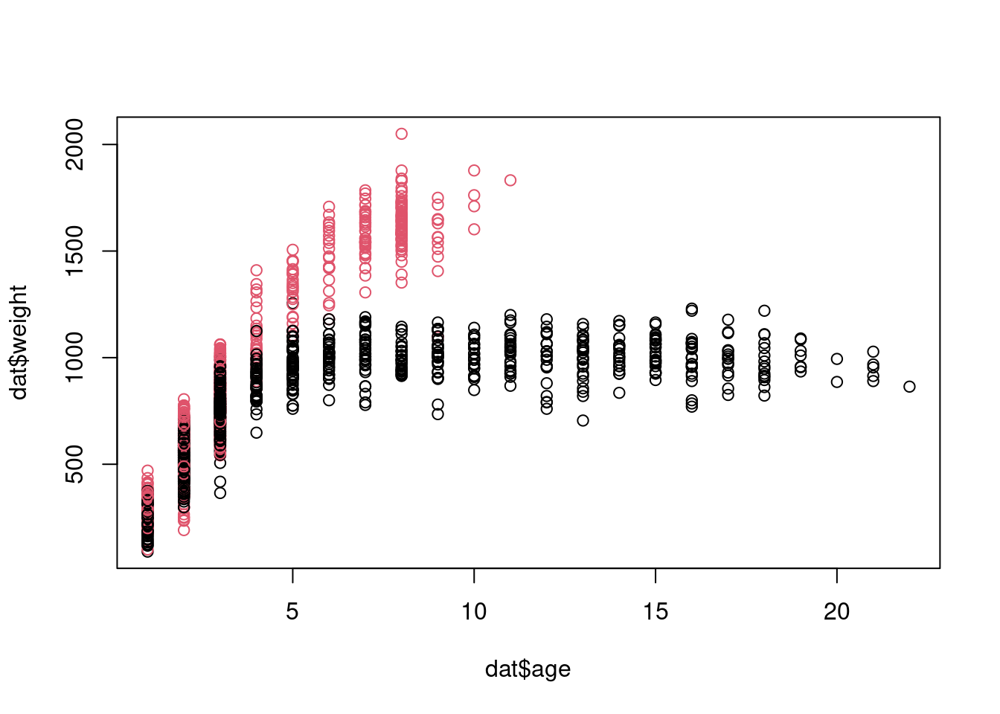
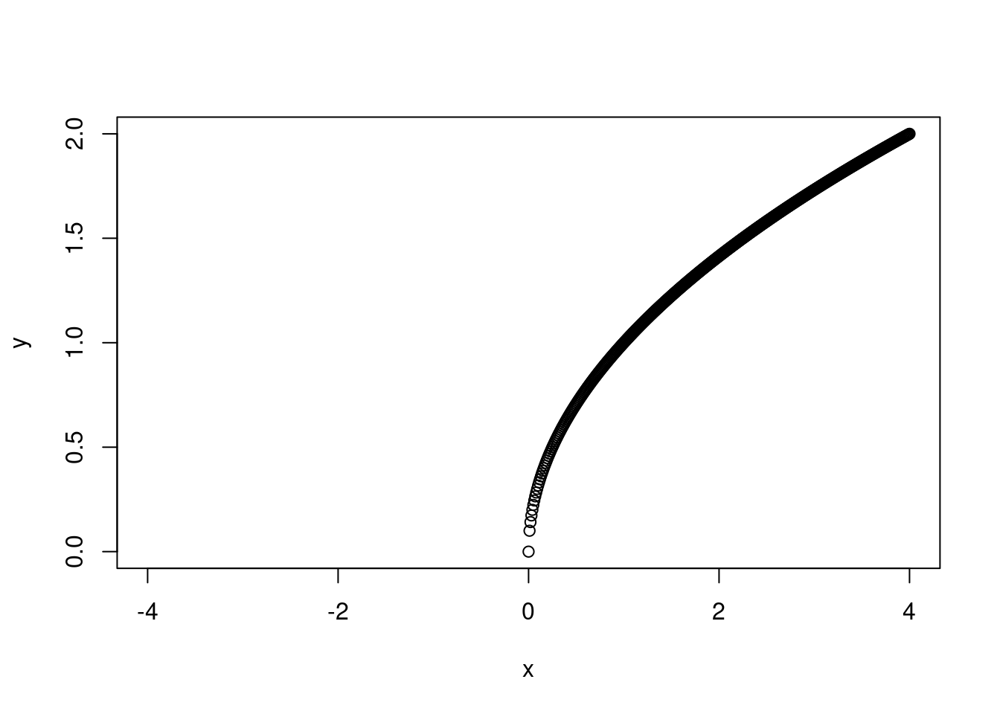
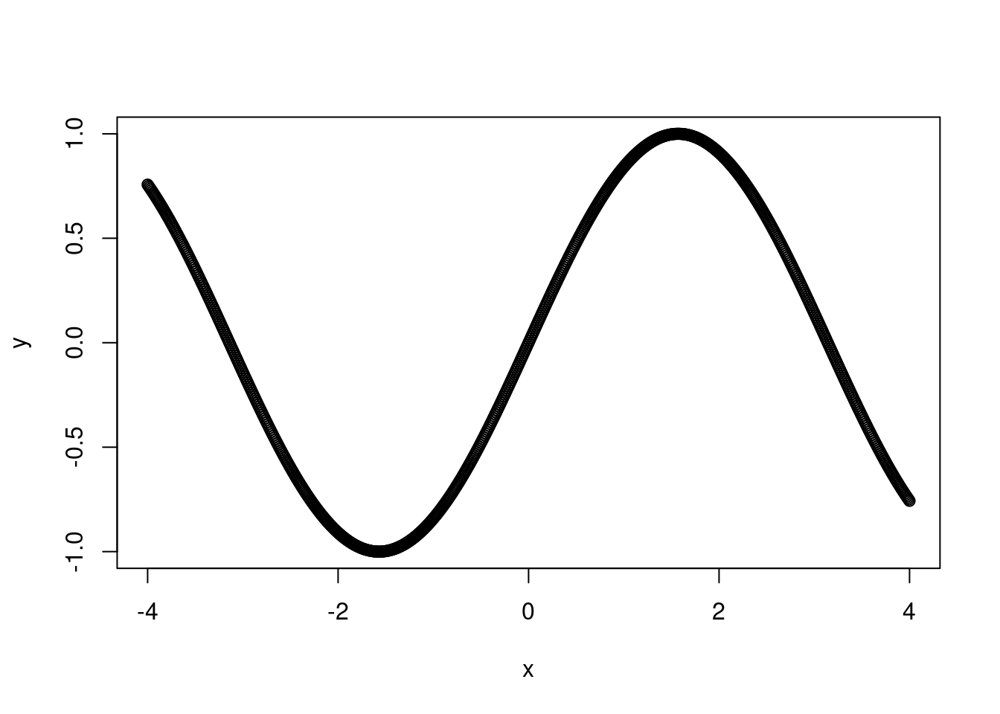
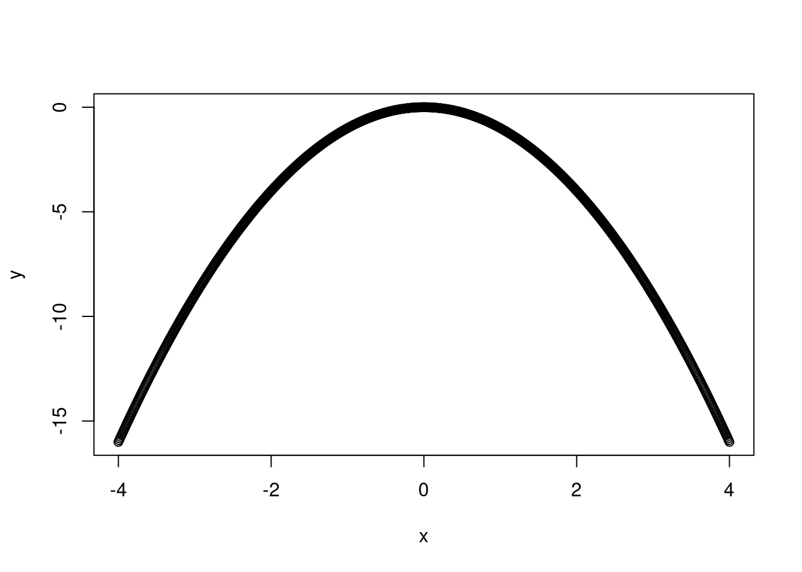
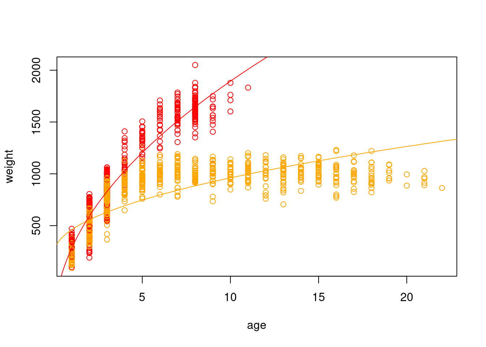

Linear models consist of a deterministic component and a stochastic component. For a normally distributed random variable \(y\) with one predictor \(x_1\), the (a) stochastic and (b) deterministic components can be represented as: \[\text{(a)} \quad y \sim Norm(\mu, \sigma) \\ \text{(b)} \quad \mu = \beta_0 + \beta_1*x_1\] In this example, you can think of \(\beta_0\) as the same as \(b\) in \(y = mx + b\) and the coefficient \(\beta_1\) as the slope \(m\). But, the general linear model is a lot more flexible than a linear function represented in slope-intercept form (so we will switch to the more accurate representation for the rest of the semester).
The deterministic component will always result in the same answer every time (i.e., it is determined). This is akin to an algebraic linear function, i.e. the y-value always lies on the line. In ecology, the deterministic component represents our biological hypothesis, i.e. it is a statement about the way we think the world works. If the world worked the way we think it does, every time we would end up observing the same outcome. Note that the deterministic component uses \(=\) because the answer is solvable.
Because there is always some amount of error or variation around that deterministic part, we also have a stochastic component. The stochastic component can represent a number of things depending on what you are modeling (e.g., measurement error, unmodeled covariates, intraspecific variation).
8.2 American bison example
For today’s lecture and next week, we will be using a dataset of bison ages and weights collected at the Konza Prairie LTER site. Let’s start by watching a video of bison to remind ourselves just how massive they are. When watching the video, pay careful attention specifically to the size (and approximate weight) of bison of different ages and different sexes, and anything that might affect an individual’s weight.
dat <-read.csv("https://tinyurl.com/bigbison")head(dat)
# calculate agedat$age <- dat$RecYear - dat$AnimalYOB +1# sort with oldest bison at the topdat <- dat[order(dat$age, decreasing = T),]# remove duplicates of the same individual# because we sorted by age first, we are keeping the oldest record per individualdat <- dat[!duplicated(dat$AnimalCode),]dat$weight <-as.numeric(dat$AnimalWeight)
Warning: NAs introduced by coercion
dat <- dat[!is.na(dat$AnimalWeight),]dat$sex <-factor(dat$AnimalSex)plot(dat$weight ~ dat$age, col=dat$sex)

Let’s say we are interested in fitting a model of the effect of age and sex on bison weight. We assume that our response variable (weight) is normally distributed. The deterministic and stochastic components of our model can be written as:
When we perform OLS to find a combination of parameters that makes our observed data the most likely, we are attempting to find the combination of our three coefficients \(\beta_0\), \(\beta_a\) and \(\beta_s\). When fitting the model, our coefficient estimates will now be the best combination of values for all three coefficients (i.e. the intercept, \(\beta_0\), the effect of age, \(\beta_{a}\), and the effect of sex \(\beta_{s}\)) that minimizes the sum of the squared residuals.
# What is this model missing? What do we need to *add* to it?
8.3 The Design Matrix
To understand why we get a combination of three coefficients that collectively minimize the sum of the squared residuals, rather than estimating the effect of each predictor separately, it is important to know just a little bit of matrix algebra. The three coefficient estimates (or ‘betas’ for short) are a vector, which has only one dimension and all elements are of the same type (typically, numeric).
A matrix, while still having elements of the same type, has two dimensions: the number of rows, and the number of columns. In ecological modeling, people typically either describe a matrix as being \(n \times p\), where \(n\) is the number of rows or number of observations and \(p\) is the number of predictors, or as being \(i \times j\) where \(i\) is the number of observations and \(j\) is the number of predictors. I tend to use \(i \times j\) because it matches how I code indices (i.e. x[i]) and because very rarely are biological concepts denoted as \(i\) or \(j\) but \(n\) often is used to describe sample sizes and \(p\) is often used for probability, so I find the code is much more readable with \(i\) and \(j\).
8.3.1 Adding matrices
Let’s say we have the following 2x3 matrices \(A\) and \(B\). To add the two matrices together, we add the matching elements from each. We can only add the matrices together if they have the same dimensionality, i.e. we could not add a 2x3 matrix to a 2x5 matrix because there will not be matching elements.
# create matrix AA <-matrix(data=c(2, 4, 3, 1, 6, 8), nrow=2, ncol=3,byrow=T # super important! default is to fill by column )B <-matrix(data=c(1, 2, 3, 5, 8, 1),nrow=2, ncol=3, byrow=T)A+B
[,1] [,2] [,3]
[1,] 3 6 6
[2,] 6 14 9
# what if we mad matrices with different dimensions?C <-matrix(data=c(1, 0, 1, 1, 0, 1),nrow=3, ncol=2, # note we now have a 3x2 matrix!byrow=T )print(C)
[,1] [,2]
[1,] 1 0
[2,] 1 1
[3,] 0 1
#A+C # this will result in an error because they have different dimensions
8.3.2 Multiplying vectors and matrices
When multiplying matrices and vectors in R, we use the %*% operator, rather than *. When multiplying a vector by a matrix, the vector needs to have the same length as the number of columns in the matrix. One thing that is perhaps counterintuitive here is that vectors are oriented like columns so the length is vertical. But, when viewed in R, they will look horizontal.
This is where our Design Matrix comes in, where the number of columns needs to be equal to our number of betas, and the number of rows needs to be equal to the number of observations. Don’t forget to add a column of all 1s if you have an intercept! i.e. so that the intercept \(\beta_0\) gets multiplied by \(1\) and added in each time.
Instead of going through the whole painful process of OLS every time we want to fit a model, R has a built in function called lm which will run a linear model for us.
mod1 <-lm(weight ~ age + sex, data=dat)
Before we get to model fit, we will go over interpreting coefficient estimates for categorical variables. In our dataset, sex is coded as M or F. Behind the scenes, R has automatically dummy-coded these for you. Dummy-coding is when you represent a categorical variable as 0 or 1, so there is a new temporary ‘column’ (not really, but thinking of it like that may be helpful) in our dataset called ‘M’ and it takes the value of 1 when the sex column is M, and 0 when it does not. There is also a new temporary, non-existent ‘column’ called F that scales the value of 1 when sex is F, and 0 when it is not, but we don’t use it because it contains identical information to the M column.
When dealing with categorical variables, there always has to be a comparison level that other levels are compared to because it is incorporated into the intercept. The default in R is the first value alphabetically. Let’s look at the summary of the model to help with understanding this.
summary(mod1)
Call:
lm(formula = weight ~ age + sex, data = dat)
Residuals:
Min 1Q Median 3Q Max
-835.03 -141.93 -19.71 125.43 961.16
Coefficients:
Estimate Std. Error t value Pr(>|t|)
(Intercept) 404.216 9.585 42.17 <2e-16 ***
age 58.855 1.328 44.32 <2e-16 ***
sexM 213.787 10.183 21.00 <2e-16 ***
---
Signif. codes: 0 '***' 0.001 '**' 0.01 '*' 0.05 '.' 0.1 ' ' 1
Residual standard error: 235.2 on 2282 degrees of freedom
(43 observations deleted due to missingness)
Multiple R-squared: 0.475, Adjusted R-squared: 0.4745
F-statistic: 1032 on 2 and 2282 DF, p-value: < 2.2e-16
We have a coefficient estimate for the intercept, for age, and for sex = M. There is no coefficient estimate for sex = F. That’s because the intercept now represents the predicted weight for a female bison at age 0. The coefficient estimate for sex = M represents the difference in the intercept for a male bison still at age 0, i.e. it shifts the entire line up the y-axis by that amount.
As a side note that does not apply to this model but will come up in the future: if you have multiple categorical variables, the intercept is the comparison level for all of them. i.e. if we also had bison color morphs that were aqua and chartreuse, the intercept would be the predicted weight for an aqua-colored female bison at age 0 (because aqua alphabetically comes first). You can change what the comparison level is by converting categorical variables into factors with factor and using relevel to specify the order.
8.4 Interpreting coefficients
The coefficient estimates that we get out of our model describe the relationships between the variables that we have included in our model. They are the answer to the question implied by our models when we fit them to test our hypotheses. If we think back to earlier in the semester and asking good questions with interesting questions, we might want to know something like “How does the weight of bison change across their lifespan, and how does it vary by sex?” rather than something like “Are male bison bigger than females?”. Our model answers the first question, and the coefficients are the answer.
mod1
Call:
lm(formula = weight ~ age + sex, data = dat)
Coefficients:
(Intercept) age sexM
404.22 58.86 213.79
# the first coefficient is our intercept. this tells us the expected weight for# a 0 year old, female bisoncoefficients(mod1)[1]
(Intercept)
404.2158
# the second parameter for age tells us how much more, or less, a bison weighs# for each additional year older it iscoefficients(mod1)[2]
age
58.85509
# the third coefficient for sex is the difference we need to add or subtract# if a bison is male (because we coded female = 0, male = 1)coefficients(mod1)[3]
sexM
213.7865
Let’s plot the predictions from the model to help with understanding the different coefficient estimates by visualizing the model (we will come back to model fit later!). Now, one obnoxious thing about plotting models fit with dummy variables, is that to predict new values, we need to be able to pass in a 0 or 1.
Okay, so I think we can all agree something seems very off about our model. In reality, animals do not continue to grow at at the same rate with age (though many fish do have indeterminate growth), and weight will eventually plateau.
Even fish with indeterminate growth do not grow linearly with age
Remember that a linear model does not have to be a straight line! Any linear function of x will do. In this case, we want something that will reach a horizontal asymptote. \(x^{1/2}\) should do the trick here. If you’re not sure what linear form of x to use, I recommend setting up a range of x-values from -4 to 4, increasing in increments of 0.1 and then plotting y as different functions of x.
x <-seq(-4, 4, by=0.01)y <- x^{1/2}plot(y ~ x)

y <-sin(x)plot(y ~ x)

y <--x^{2}plot(y ~ x)

To model weight as a function of the square root of age and sex, we will first create a new variable consisting of the square root of age, and then refit the model with this as a covariate.
This is closer, but we still aren’t capturing that there is a rapid increase at the beginning followed by a tapering off and that the slopes are really different for male and female bison. We can model this with an interaction between our categorical predictor (sex) and our continuous predictor (the square root of age).
mod.int <-lm(weight ~ age.sq + sex + age.sq*sex, data=dat)summary(mod.int)
Call:
lm(formula = weight ~ age.sq + sex + age.sq * sex, data = dat)
Residuals:
Min 1Q Median 3Q Max
-677.19 -81.18 2.93 83.82 508.67
Coefficients:
Estimate Std. Error t value Pr(>|t|)
(Intercept) 228.973 9.268 24.71 <2e-16 ***
age.sq 231.369 4.124 56.10 <2e-16 ***
sex -690.224 17.437 -39.59 <2e-16 ***
age.sq:sex 513.445 9.353 54.89 <2e-16 ***
---
Signif. codes: 0 '***' 0.001 '**' 0.01 '*' 0.05 '.' 0.1 ' ' 1
Residual standard error: 132.9 on 2281 degrees of freedom
(43 observations deleted due to missingness)
Multiple R-squared: 0.8325, Adjusted R-squared: 0.8322
F-statistic: 3778 on 3 and 2281 DF, p-value: < 2.2e-16
Call:
lm(formula = weight ~ age.sq + sex + age.sq * sex, data = dat)
Coefficients:
(Intercept) age.sq sex age.sq:sex
229.0 231.4 -690.2 513.4
# the first coefficient is our intercept. this tells us the expected weight for# a 0 year old, female bison# the second parameter for age.sq tells us how much more, or less, a bison weighs# for each additional increase of that covariate# if our covariate was just age, it would be for each additional year older it is# because it is the square root of age, it is the increased weight for# each additional square root of years a bison ages# this is why it tapers off over timesqrt(1)*coefficients(mod.int)[2]
age.sq
231.3685
sqrt(2)*coefficients(mod.int)[2]
age.sq
327.2045
sqrt(3)*coefficients(mod.int)[2]
age.sq
400.742
sqrt(4)*coefficients(mod.int)[2]
age.sq
462.7371
# the third coefficient for sex is the difference we need to add or subtract# if a bison is male# our final coefficient in this model is the interaction of the square root of # age and sex. it will behave similarly to the second coefficient, but only be # applied if a bison is male. this means we have an additional effect# of the square root of age that only applies for male bison, allowing them# to grow really, really fast early on and then taper off
9 Prediction and inference
9.1 Predicting
Instead of creating a design matrix and multiplying it by our vector of coefficient estimates, there is a built-in function in R to make predictions from a model called predict. If we run predict on our model without any other arguments, it will return the expected value for every observation in our dataset that we used to fit the model. We can also pass new data to the predict function to predict across a range of responses, which is typically what we are actually interested in doing because we want to make inference about the general relationship, not specific individuals. We can also use it to extrapolate beyond the range of values used to fit the model (but shouldn’t!).
# expected value for each observation in our datasetpredict(mod.int)
# predict responses across a range of ages# remember that our model uses the square root of ages, so we need to transform our predictorxvals <-seq(0, 30, 0.1)p.f <-predict(mod.int, newdata =data.frame(age.sq=sqrt(xvals), sex=0), type="response")plot(p.f ~ xvals)
# typically, we want to visualize our data on the scale that it was collected# so, because it is easier for us as humans to visualize age, rather than the square# root of age, we should plot across that scaleplot(weight ~ age, data=dat, col=c("orange", "red")[dat$sex+1])lines(p.f ~ (xvals), col="orange")lines(p.m ~ (xvals), col="red")

9.2 Extrapolating
Because we can predict our model to any value, we can extrapolate outside the realm of values used to fit the model. But, our estimates will be far less certain. This is generally frowned upon.